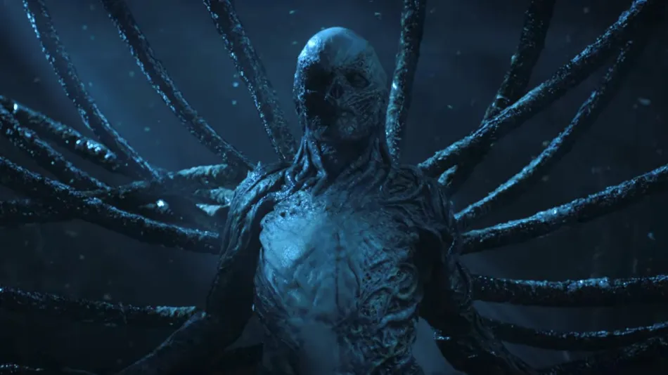

Esqueça o que leu sobre Stranger Things
Vejam bem, tudo o que leram na internet e as diversas teorias que inventaram sobre o
que ia acontecer estavam erradas. Muitos estavam tão fora do que ia rolar que muitos
foram assistir e se decepcionaram por não ter percorrido o caminho que queriam.
Antes de dar play em Stranger Things, já esteja avisado que as expectativas criadas
com coisas descabidas são de responsabilidade sua e não do seriado. Não entregarei
spoilers aqui, mas saiba que independente da ideia que esteja, desapegue dela.
O caminho para o fim
Além de tudo isso, existe algo que ninguém está comentando muito que é o fator “ponte”.
Preparando o terreno para a quinta e última temporada, o final tem a responsabilidade
de encerrar a história de forma que devemos esperar ao menos o que vem pela sequência.
Aqui temos um fim mais espetacular e que mostra o grande combate que terão no próximo ano.
Não há nada como aquela cuspida de larvas de Will no fim da primeira, um momento que dava
um gostinho do que estava por vir. Na quarta temporada eles foram menos singelos e
esfregaram logo na cara do público o que devem esperar.
